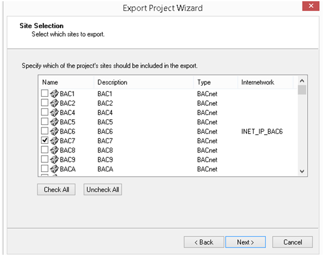
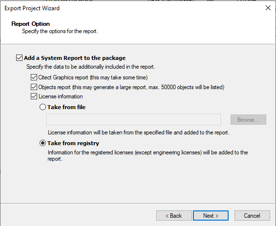
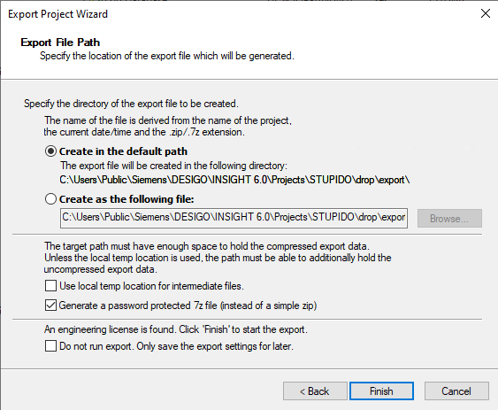
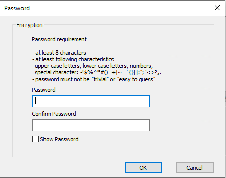
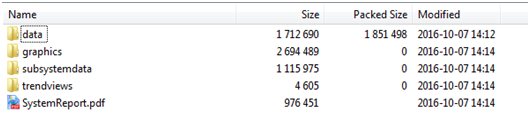

Create a Migration Package
The Migration package option modifies the export package to meet your requirements for migrating a project to the Desigo CC management platform.
- Sufficient memory for the export package.
- Start the Project utility.
- Select the project.
- Right-click the project and select the displayed menu Migration to Desigo CC.
- In the Project Migration Scope dialog box, select the Migration package.
- The Select Site dialog box displays.
- Select the sites from the list for inclusion in the export. All BACnet sites are selected by default.

- Click Next >.
- Select the Citect Graphic Projects for inclusion in the export. You must indicate all Citect projects that include the relevant graphic pages. Only non-standard Citect projects are included on the list.
- (Optional) Select Consider default graphic projects.
NOTE: The export can take some time if graphic projects are included. - Click Next >.
- In the Trend, log and audit data selection, indicate the data to be included in the export.
a. Select Trend, Log, or Audit trail.
b. Select Time range from the drop-down list. The option Last 12 months is displayed by default in the drop-down list. Archive data is included in the export package if available within the indicated time range.
NOTE: A warning displays if the expected database archive is missing. You can either continue or cancel the export without the database archive.
The archive history in Desigo Insight must first be cleaned up if you cancel (see Document CM110588xx02 Displaying archived trend data).
This applies to trend, log, and audit trail archive databases.
a. In Desigo Insight V6.0 SP3 (Trend Viewer, Log Viewer, or Audit Viewer), select menu File > Open archive.
b. Select the appropriate archive line (the column File exists has the entry No).
c. Select either
- File path (location) to correct the path to an existing archive file,
or
- Delete entry to delete one or more entries for non-existing files.
d. Close the dialog box. The archive history is updated. - Click Next >.
- The Trend View Select dialog box opens.
- Select the Trend View Definitions to be included in the export.
NOTE: You must manually copy trend views that are outside or above the indicated folder. - Click Next >.
- The License file option dialog box displays.
- In the Report option dialog field, select one or more options for the integrated system report:
- Citect Graphic Report
- Object Report
- License information
- Select Read from file to create the export file at the default location.
a. Click Search.
b. Enter a name and target folder.
c. Click OK.
- Select Read from registry to select information for the registered licenses (except the configuration license).
- Click Next >.
- The Export file path dialog box displays.
- In the Export file path dialog box, do one of the following. Click
- Select Create in default path to create the export file at the default location.
- Create as following file to save the export file to the indicated path. Indicate the target path for the export file: Select check box Use a temp folder for clipboard files.
- Select check box Create password for 7z file, if you do not create a zip file.
- Select check box Do not export to save the configuration.

- Select Finish.
- (Optional) When selecting check box Create password for 7z file, enter a password and click OK.

- The report and data are saved as a zip file.

- Continue in Desigo CC with the Migration process.

NOTE:
The file of the report package uses the syntax ProjectName_DateTime.zip and cannot be changed.